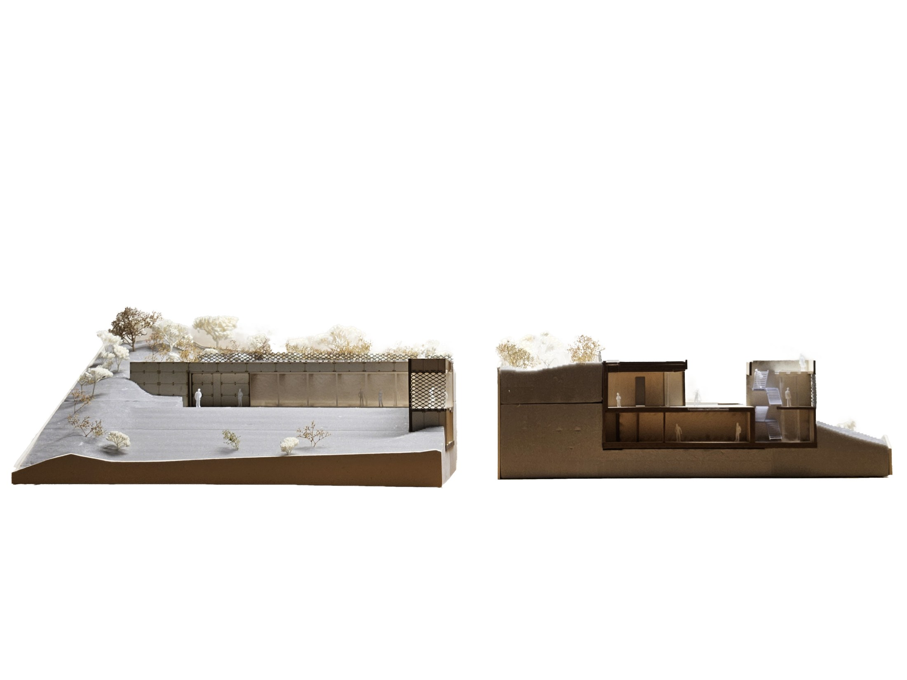
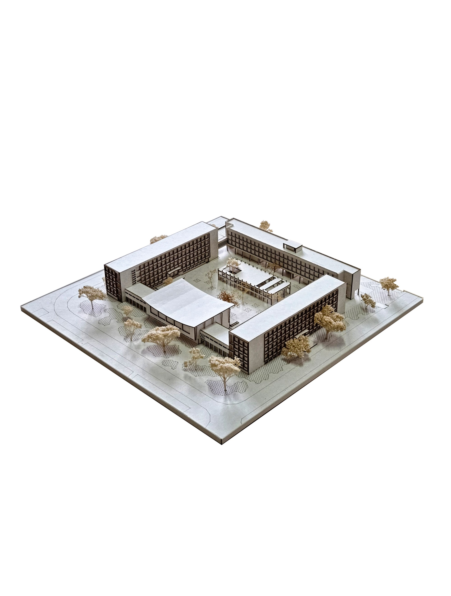
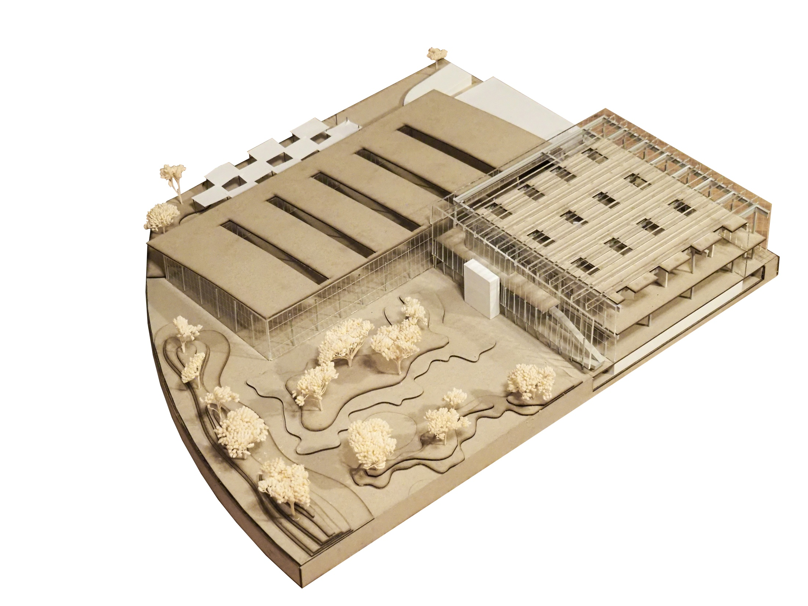
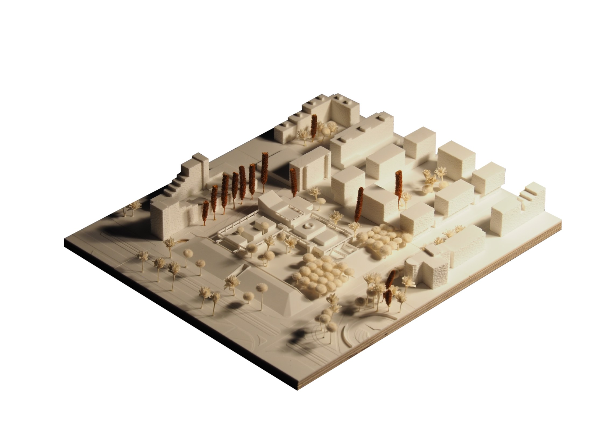
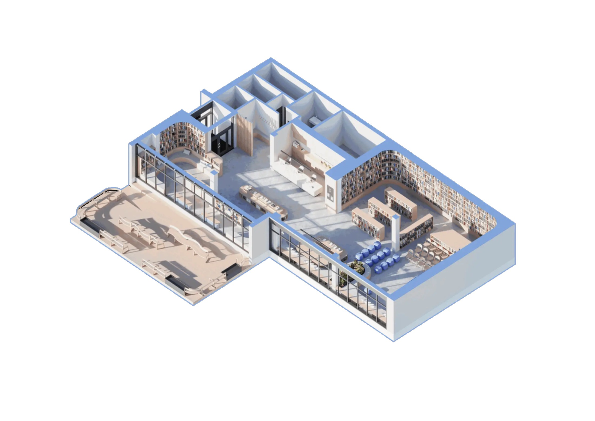
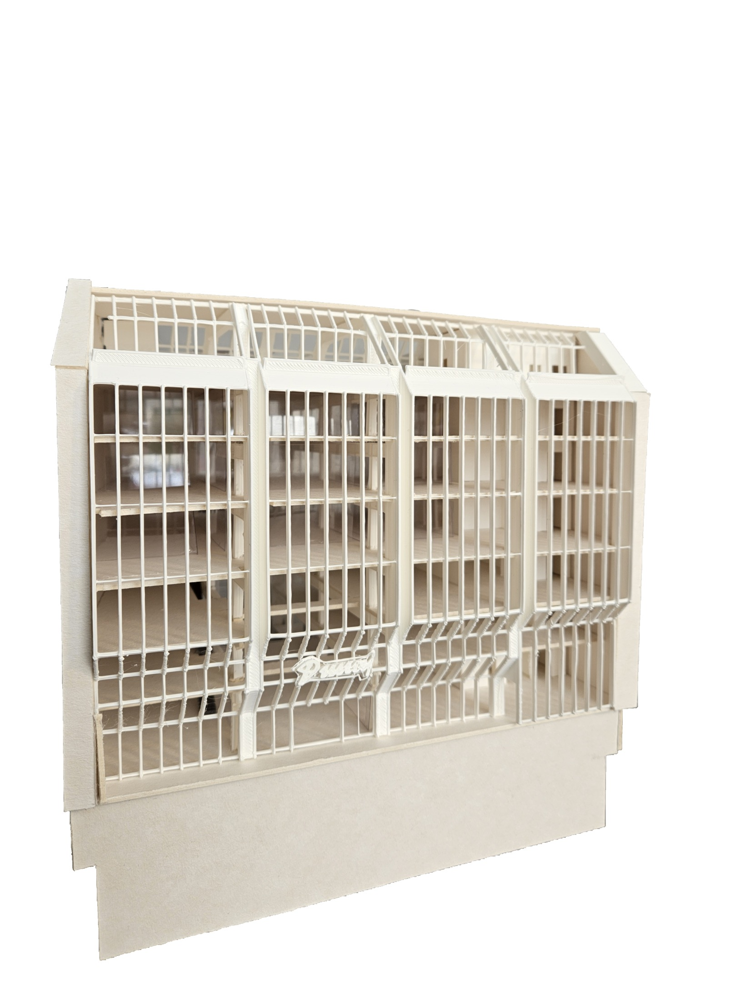
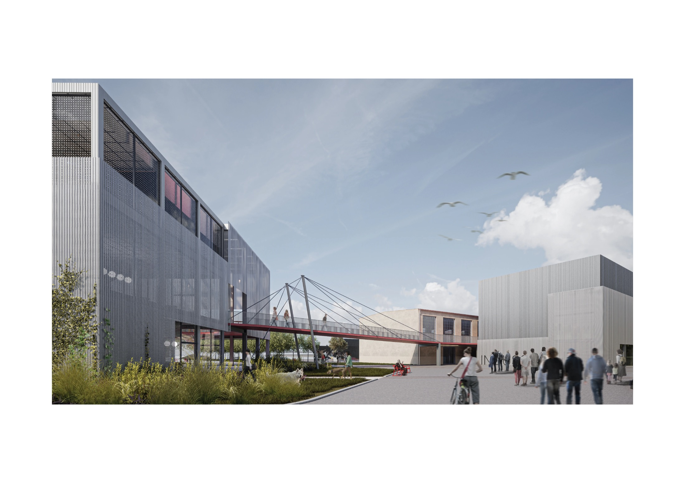

Kontextuálna, vrstvená architektúra. Pracujeme s existujúcim — s miestom, jeho históriou a materiálom — namiesto toho, aby sme ho prekryli.
Projekty






Zobrazené sú doterajšie študijné a súťažné projekty — modely, skice aj vizualizácie. Portfólio sa priebežne dopĺňa o realizácie.